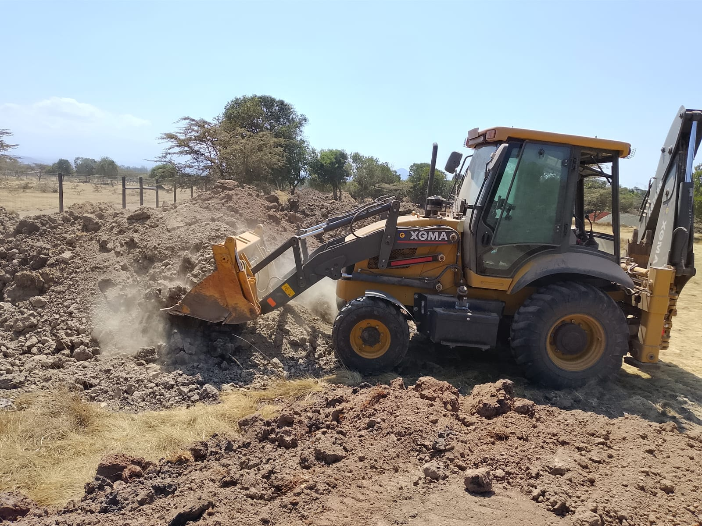
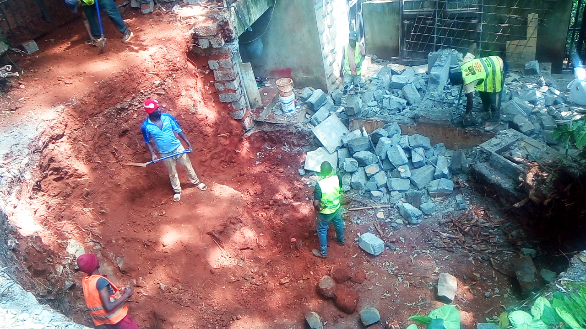

Mucheru World of Golf
Extensive civil earthworks, fairway corridor clearing, tee complex adjustments, subgrade preparation, drainage pipe fabrication, and specialist hydraulic surveys advanced smoothly across Mucheru World of Golf under the joint field oversight of Mr. Gichuhi and Ken. Additionally, Mr. Joe Mucheru (Boss) went on an inspection tour with a guest; Caroline Mbugua of Middle East Bank at the ongoing golf course construction.
- Fairway Corridor Clearance (Fairways No. 11 & 12): Ground and equipment crews cleared heavy brush, wild vegetation, and uneven subgrade across Fairways No. 11 and No. 12, opening clean, sweeping playing corridors and establishing design centerline alignments.
- Teebox No. 12 Expansion & Adjustments: A dedicated Ladies' Teebox platform was newly established on Hole No. 12 to provide forward tee options. Concurrently, the primary/existing Teebox No. 12 was carefully resized and trimmed to optimize surface elevations and landing zone sightlines.
- Perimeter Earthen Berm / Mounding Construction: Hauling and tipping of murram and soil proceeded actively along the property boundary fence line, building contoured landscape berms (perimeter earthen hills) to provide perimeter security, visual screening, and natural fairway framing.
- Red Soil Haulage for Palm Tree Planting (Cross-Site Equipment Coordination): The Backhoe Loader (front loader bucket) loaded rich red topsoil onto the farm tractor tipping trailer, which transported the soil to designated palm tree planting stations along the perimeter fence line under the field coordination of Kinoti.
- Dam Liner Preparation & Specialist Engineering Survey: A specialized dam liner technician was on site conducting precise geometric and volumetric measurements across the excavated irrigation reservoir (dam) basin in preparation for the procurement and installation of the heavy-duty geomembrane dam liner.
- Green Drainage Infrastructure & PVC Pipe Preparation: Crews advanced subgrade drainage works across the green complexes, including precision slitting of perforated PVC drainage pipes, manual clearing and levelling of sub-base drainage trenches, and systematic staging and moving of prepared PVC pipes directly onto the greens for immediate laying.
- Golf Course Inspection Tour & Green No. 7 Marking: Mr. Joe Mucheru (Boss) went on an inspection tour with a guest; Caroline Mbugua of Middle East Bank at the ongoing golf course construction, observing course progress as site crews marked the layout and drove boundary survey stakes for Green No. 7.
Key Milestone Accomplishments — Course Clearance & Specialist Surveys
Fairway corridors No. 11 and No. 12 were successfully cleared; Teebox No. 12 was expanded with an added Ladies' tee platform; perimeter earthen berms are taking shape along the fence line; and specialist dam measurements were successfully completed to finalize dam liner procurement.
Heavy earthmoving equipment on site operated continuously throughout the day. Per project operational rules, the Front Loader and Backhoe refer to the same physical machine on site (the Backhoe Loader); all operational hours and billing are consolidated under a single Backhoe Loader entry.
| Machine Model / Unit | Operator Hours | Unit Rate (KES) | Total Amount (KES) | Primary Field Tasks Assigned |
|---|---|---|---|---|
| Backhoe Loader (Consolidated Front Loader & Backhoe) |
9.00 hrs (9.0 hrs Shift) |
KES 6,500.00 | KES 58,500.00 | Loading red soil onto farm tractor trailer for palm tree holes, fairway clearing (Fairways 11 & 12), teebox cutting/grading, and pouring murram/soil along fence line for perimeter berms. |
| Daily Total | 9.00 hrs | — | KES 58,500.00 | Consolidated Daily Machine Billing |
Heavy Equipment Operational Summary
The Backhoe Loader delivered a full 9.00 operating hours dedicated to bulk red soil loading onto the farm tractor trailer, mechanical corridor clearing on Fairways No. 11 and 12, earth shaping on Teebox 12, and perimeter soil tipping for berm formation.
🎥 Mucheru World of Golf — Daily Operations & Earthmoving Progress
Comprehensive field video footage capturing September 5 operations at Mucheru World of Golf, highlighting fairway corridor clearing across Fairways 11 & 12, Teebox 12 ladies' tee addition and sizing adjustments, perimeter berm mounding along the fence, Backhoe Loader soil loading, and green drainage preparation.
Photographic field documentation capturing Mr. Joe Mucheru's inspection tour with guest Caroline Mbugua of Middle East Bank, Green No. 7 survey marking, mechanical fairway clearing across Fairways No. 11 & 12, Teebox No. 12 resizing, perimeter earthen berm formation, red topsoil tipping for palm trees, specialist dam reservoir measurements, and perforated PVC pipe slitting and installation within green drainage trenches.

Golf Course Inspection Tour — Mr. Joe Mucheru & Caroline Mbugua
Mr. Joe Mucheru (Boss) on an inspection tour with guest Caroline Mbugua of Middle East Bank at the ongoing golf course construction, walking across to inspect Green No. 7.

Green No. 7 Layout Marking & Stake Alignment
Mr. Joe Mucheru (Boss) supervising site crew driving wooden boundary and elevation survey stakes into the subgrade of Green No. 7, with the farm tractor and tipping trailer visible in the background.

Green No. 7 Perimeter & Contour Layout Marking
The prepared subgrade of Green No. 7 marked with clean white lime boundary lines and survey stakes defining the green's perimeter geometry and internal grade contours.

Mechanical Fairway Clearance — Backhoe Loader
The Backhoe Loader utilizing its front loader bucket to scrape dense brush, dry grass, and rough vegetation, establishing clean playing surfaces along Fairways No. 11 and 12.

Fairway Playing Corridor Clearance Progress
Perspective view looking down the newly cleared fairway corridor towards staged material stockpiles (hardcore rocks, ballast stone, and red topsoil) under active preparation.

Cleared Fairway Subgrade & Playing Alignment
Sweeping view showing the distinct boundary between the freshly bladed, leveled fairway subgrade on the left and uncut rough vegetation on the right, with machinery working ahead.

Teebox No. 12 Trimming & Grade Adjustments
Graded approach corridor leading to the newly resized Teebox No. 12 platform, cut and leveled to design elevations with perimeter earthworks in progress along the boundary.

Backhoe Loader Constructing Perimeter Berms
The Backhoe Loader (front bucket) actively cutting, pushing, and shaping bulk subsoil to build elevated earthen berms along the perimeter boundary fence line.
.jpeg)
Perimeter Earthen Berms (Landscape Mounding)
Contoured earthen landscape berms formed along the property boundary fence line, engineered to provide visual screening, privacy, and natural framing along the golf holes.

Backfilling Red Soil into Palm Tree Pits
Ground crew coordinating with the farm tractor and red hydraulic tipping trailer, discharging rich red topsoil into prepared palm tree holes along the perimeter security fence under the field supervision of Kinoti.

Dam Liner Engineering Survey & Geometric Measurements
Specialized dam technician standing inside the excavated irrigation reservoir (dam) basin recording geometric elevations and perimeter measurements for geomembrane liner procurement.

Irrigation Dam Reservoir Basin Technical Survey
Elevated perspective capturing the dam specialist conducting volumetric and grade surveys across the contoured floor and embankments of the excavated dam basin.

Field Fabrication & Slitting of PVC Drainage Pipes
Technical crew sitting outdoors utilizing power tools to make precision perforation cuts across orange PVC drainage pipes for subsurface green drainage systems.

Prepared Slit Perforated PVC Drainage Pipes
Neatly stacked orange PVC drainage pipes displaying precision crosswise slits along the upper perimeter to capture percolation water while blocking coarse sediment.

Staged PVC Drainage Pipes at Green Complex
Perforated PVC drainage pipes staged adjacent to the green construction foundation, with red topsoil banks, hardcore rock bedding, and ballast aggregate stockpiles in view.

Placing PVC Drainage Pipes in Green Foundation Trenches
Construction crew carefully laying perforated PVC pipes into excavated herringbone trenches across the hardcore stone foundation bed lined with separation membrane.

Alignment & T-Junction Fitting of Green Drainage Lines
Workers fitting and connecting orange PVC drainage pipe sections with T-junction fittings within the drainage trenches amidst the dense hardcore rock foundation layer.
Chaka Farms
Detailed dairy milking yield recorded strictly in Litres (L). Dairy cow yield represents the total gross milk production, out of which daily calf/kid rations and staff allocations are deducted to establish the net remaining farm balance:
| Production Stream / Allocation | Morning Yield (L) | Evening Yield (L) | Daily Gross (L) | Allocations (L) | Net Balance (L) |
|---|---|---|---|---|---|
| Dairy Cow Milk Production (Gross Farm Milk Output) |
4.0 L | 2.5 L | 6.5 L | — | 6.5 L |
| Goat Kids Daily Ration (0.5L Morning + 0.5L Evening) |
0.5 L | 0.5 L | 1.0 L | - 1.0 L | — |
| Gladys Allocation (Designated Staff Ration) |
— | — | 0.5 L | - 0.5 L | — |
| Net Farm Milk Balance Available | 4.0 L Morning | 2.5 L Evening | 6.5 L Gross | - 1.5 L Deductions | 5.0 L Net |
Production Accounting Summary
Total gross dairy production for September 5 closed at 6.5 Litres (4.0L Morning + 2.5L Evening). After deducting 1.0L for goat kids morning/evening rations and 0.5L allocated to Gladys, the net farm dairy balance remained at 5.0 Litres for farm use.
Comprehensive working dog conditioning, pack socialization, obedience training, kennel hygiene, and coat grooming were carried out across the Chaka Farms Canine Unit under Willy's leadership:
- Morning Off-Leash Walking, Exercising & Socialization: Conducted extensive morning off-leash field walking, running, and pack socialization across farm paddocks with Zara, Coby, and Logan. The dogs engaged in positive pack interaction, exploration, and energy expenditure in open green spaces.
- Paw Command Training: Structured obedience sessions focusing on the "Paw" (shake) command, reinforcing handler engagement, precision responsiveness, and canine cognitive conditioning.
- Kennel Manners & Threshold Discipline: Conducted threshold patience drills, reinforcing controlled exit and entry behavior, eliminating lunging, and establishing calm kennel gate manners.
- Kennel Sanitation & Deep Cleaning: Thorough morning pressure washing, floor scrubbing, drainage clearance, and sanitization of all kennel runs, sleeping quarters, and feed/water bowls.
- Afternoon Washing, Shampooing & Grooming: Completed comprehensive coat washing, medicated shampooing, and grooming for the dogs in the afternoon. Coats were conditioned, thoroughly rinsed, and dried under the afternoon sun inside clean, sanitized kennel runs.
Canine Conditioning & Hygiene Accomplishment
All dogs (Zara, Coby, and Logan) completed morning off-leash field exercise and pack socialization, followed by threshold manners conditioning and a full afternoon washing and coat grooming session, maintaining peak health and obedience.
General compound sweeping, facility sanitation, and estate maintenance progressed across Chaka Farms under the supervision of Margaret and Monica:
- Estate Grounds Sweeping: Thorough sweeping, litter clearing, and pathway cleaning carried out across the main compound, residential forecourts, office verandas, and access routes.
- Perimeter Hygiene & Garden Care: Cleared fallen leaves, organic debris, and dust accumulations around garden borders, keeping the compound immaculate.
Field video documentation capturing morning off-leash exercise, running, and pack socialization routines with Zara, Coby, and Logan under Willy's guidance:
🎥 Morning Off-Leash Walking & Pack Socialization (Session 1)
Field video recording documenting Zara, Coby, and Logan roaming freely off-leash across the open paddocks, demonstrating friendly pack cohesion and handler recall.
🎥 Pack Socialization & Play Exercise (Session 2)
Video footage capturing high-energy pack interaction, playful running, and active socialization among the canine unit in the spacious farm fields.
🎥 Extended Field Roaming & Recall Routine (Session 3)
Field video demonstrating off-leash obedience, calm group pacing, and immediate response to handler whistle and voice commands during morning exercise.
Photographic visual documentation capturing canine unit grooming, washing, sanitized kennel enclosures, and afternoon conditioning routines at Chaka Farms.

Kennel Stall Hygiene & Clean Enclosure
Cleaned, sanitized kennel run showing the White Swiss Shepherd resting comfortably on fresh concrete floors with clean water and food bowls after afternoon washing.

Post-Bath Coat Inspection & Rest
Freshly bathed and brushed White Swiss Shepherd standing in the clean kennel stall, exhibiting pristine coat hygiene and calm kennel manners.
.jpeg)
Zara in Dedicated Stall Following Bathing
Zara the White Swiss Shepherd shaking her clean, freshly washed coat inside her named kennel stall ("Zara"), with clean water bowls in place.

Coat Washing & Grooming Detail
High-angle view documenting Zara's damp, clean white coat drying under the afternoon sun following complete shampooing, rinsing, and brushing.

Sunlit Run & Natural Coat Drying
Zara standing comfortably in the sunlit portion of her kennel run, drying naturally after her afternoon grooming session.
Kabete Residence
Major structural demolition, subgrade terrace excavation, masonry roofing weatherproofing, and domestic pet care advanced at Kabete Residence, with operations overseen and field updates shared by Njoki. Demolition crews achieved a key project milestone today by completing 100% demolition of the guest toilet masonry walls and reinforced concrete roof slab.
- Guest Toilet Walls & Reinforced Concrete Slab Demolition (100% Complete): Demolition personnel successfully brought down the remaining exterior masonry walls and shattered the reinforced concrete roof slab. Concrete was chipped away from the steel rebar mesh, the steel reinforcement grid was dismantled, and all structural walls were flattened to ground level, generating sorted rubble piles ready for removal.
- Outdoor Fireplace Excavation & Clearance (In Progress): Manual excavation and bank clearance continued at the sunken outdoor fireplace terrace. Ground crews dug into the red subsoil embankment wall, cleared rocky subgrade, and excavated the circular fireplace pit down toward design floor elevation.
- Dog Kennel Roof Tile Cementing Works (Completed): Masons completed cementing and mortar flashing along the terracotta roof tiles of the outdoor dog kennel structure. The mortar ridge along the intersection between the roof tiles and the stone masonry wall was fully sealed to provide durable waterproofing and eliminate leaks.
- Carpentry Fitting — Timber Shelf Holder / Peg Rack: Completed the fabrication and secure wall-mounting of an additional heavy-duty timber shelf holder with rounded pegs, expanding organized storage capacity for equipment and supplies.
- Domestic Pet Care & Nutrition: Full attentive care was provided to resident pets at Kabete Residence. Ajabu the Golden Retriever was fed his evening meal from his bowl on the veranda tiles. The three resident cats—Reo, Mocha, and Aiko—were fed their evening dinners side-by-side from stainless steel bowls indoors.
Major Milestone Accomplishment — Toilet Walls & Concrete Roof Slab 100% Demolished
The outdoor guest toilet structure adjacent to the fireplace is now completely leveled. Both the masonry walls and the reinforced concrete roof slab have been 100% demolished, clearing the structural footprint and enabling fireplace terrace grading to proceed unimpeded.
Photographic visual documentation capturing toilet slab concrete demolition, rebar grid breakdown, wall leveling, outdoor fireplace pit excavation, kennel roof tile cementing, storage rack fitting, and domestic pet care at Kabete Residence.

Toilet Roof Slab Concrete Chipping & Rebar Exposure
Workers atop the toilet roof slab breaking away reinforced concrete with chisels and sledgehammers, exposing the structural steel rebar grid beneath.

Reinforced Concrete Slab Shattering
Detailed view of the toilet roof slab demolition showing fractured concrete sections dropping into the rubble heap below while rebar mesh is systematically severed.

Embankment Trimming & Wall Breach
Worker on an aluminum ladder trimming the vertical earth embankment while ground personnel clear excavated red dirt and masonry rubble below.

Roof Slab Fully Severed & Cleared
Close-up view confirming the reinforced concrete roof slab has been completely severed and dismantled from the wall lintels down into the foundation pit.

Toilet Walls & Slab 100% Leveled
Overhead view confirming the guest toilet structure has been entirely flattened, with masonry walls broken down into neat stone piles and the terrace floor opened up.

Fireplace Terrace Red Soil Excavation
Excavation team in high-visibility vests shoveling and shaping the vertical red soil terrace bank while clearing heavy stone boulders from the sunken fireplace area.

Sunken Outdoor Fireplace Pit Grading
Overhead survey perspective showing the excavated semi-circular bowl for the sunken fireplace lounge, surrounding red soil grading, and sorted masonry rubble piles.

Dog Kennel Roof Tiles Mortar Flashing
Close-up inspection showing freshly applied cement mortar flashing sealing the joint between the terracotta roof tiles and the stone masonry wall, preventing water infiltration.

Completed Dog Kennel Roof Weatherproofing
Wide perspective of the outdoor dog kennel structure nestled between stone walls, showing completed roof tile cementing, wire mesh door, and surrounding garden grounds.

Timber Shelf Holder & Storage Rack Fitting
Solid timber wall bracket and rounded peg rack securely mounted against wood plank siding to provide dedicated vertical storage for equipment and accessories.

Ajabu the Golden Retriever Feeding on Veranda
Ajabu enjoying his evening meal in his feeding bowl on the red tiled veranda floor at Kabete Residence, in excellent health and high spirits.

Resident Cats Reo, Mocha & Aiko Dining
Resident cats Reo, Mocha, and Aiko feeding peacefully side-by-side from their dedicated stainless steel bowls indoors at Kabete Residence.
Amani Cottage
Comprehensive landscape grounds maintenance, turf irrigation, pathway sanitation, and meticulous interior housekeeping care were carried out at Amani Cottage, maintaining exceptional estate hygiene and presentation.
- Estate Grounds Irrigation: Conducted thorough sprinkler and hose irrigation across newly planted lawn grass, established turf zones, and ornamental garden borders, ensuring deep root moisture penetration to maintain lush green growth.
- Entire Compound Sweeping & Litter Removal: Complete compound sweeping was executed across the stone pathways, cottage veranda, entrance court, and lawn perimeter, removing all fallen leaves, grass cuttings, and organic debris to ensure a clean, tidy landscape.
- Dining Table Chair Covers Washing & Stainless Steel Care: The domestic housekeeper performed a specialized re-washing and laundering of the dining table chair fabric covers. This secondary wash was specifically undertaken to eliminate watermarks and residue from the previous cleaning cycle that had left cosmetic stains against the stainless steel chair frames, successfully restoring them to spotless, gleaming condition.
Grounds & Housekeeping Quality Assurance
The entire cottage compound was thoroughly swept and irrigated, while interior dining table chair covers were re-washed to perfection, eliminating water stains and ensuring the dining area and stainless steel furniture present an immaculate finish.